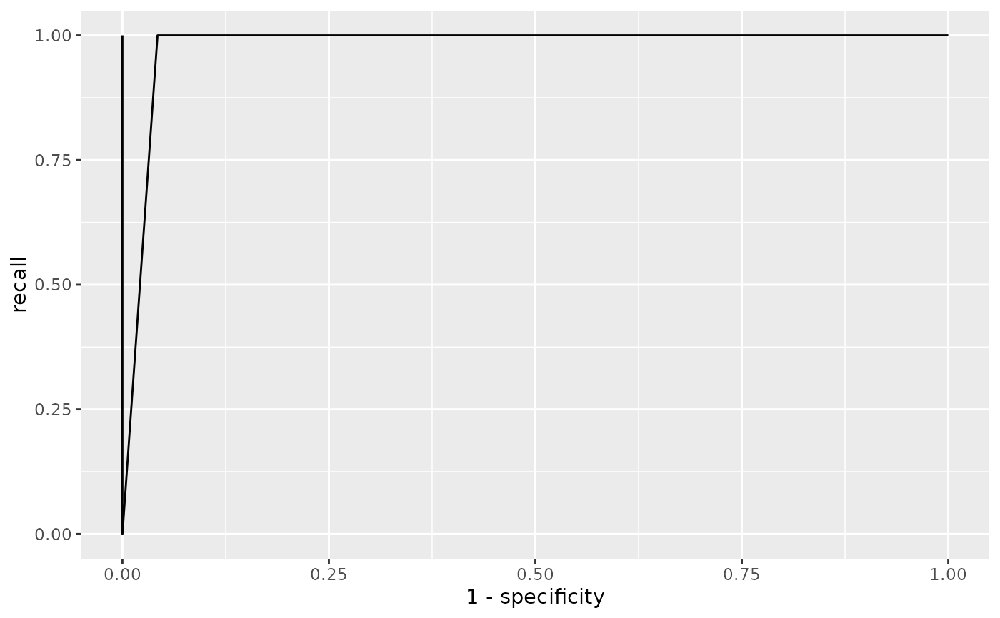

Calculate receiver operating characteristic (ROC) scores for a model association Matrix
Source:R/evaluation.R
get_roc.RdThis function computes receiver operating characteristic (ROC) scores for a given model association matrix. It evaluates the performance of the model at various thresholds, providing metrics like f-scores, precision, and recall. The function can operate with a range of thresholds and optionally consider a gold lexicon for calculating true and false positives and negatives. The result is a comprehensive assessment of model performance over a continuum of classification thresholds.
This function computes the maximum F-score from the receiver operating
characteristic (ROC) scores of a model. It leverages the get_roc() function
to calculate the ROC scores and then extracts the highest F-score, providing
a concise metric for the best classification performance of the model.
Arguments
- m
A matrix representing the knowledge matrix with words as rows and referents as columns.
- thresholds
Vector of thresholds to use.
- gold_lexicon
Optional; a data frame or list where each row/element represents a word-object pair in the gold lexicon. If provided, it is used to calculate true positives, false positives, and false negatives.
Value
A tibble with columns for the threshold, f-score, precision, and recall.
A single numeric value representing the maximum F-score obtained from the ROC scores of the model.
Examples
dat <- xsl_datasets[[1]]
x <- xsl_run(baseline(), dat)
mat <- x$fits[[1]]$matrix
lex <- list(words = rep(1:18), objects = rep(1:18))
get_roc(mat, gold_lexicon = lex)
#> # A tibble: 101 × 5
#> threshold precision recall fscore specificity
#> <dbl> <dbl> <dbl> <dbl> <dbl>
#> 1 0 0.0556 1 0.105 0
#> 2 0.01 0.075 1 0.140 0.275
#> 3 0.02 0.075 1 0.140 0.275
#> 4 0.03 0.075 1 0.140 0.275
#> 5 0.04 0.075 1 0.140 0.275
#> 6 0.05 0.168 1 0.288 0.709
#> 7 0.06 0.168 1 0.288 0.709
#> 8 0.07 0.168 1 0.288 0.709
#> 9 0.08 0.168 1 0.288 0.709
#> 10 0.09 0.581 1 0.735 0.958
#> # ℹ 91 more rows
plot_roc(mat, gold_lexicon = lex)

get_roc_max(mat, gold_lexicon = lex)
#> [1] 1